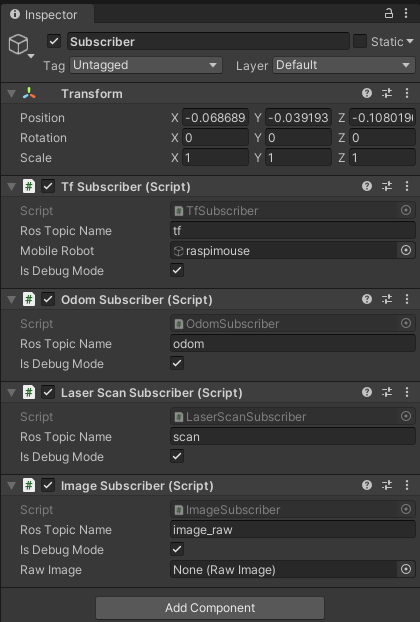
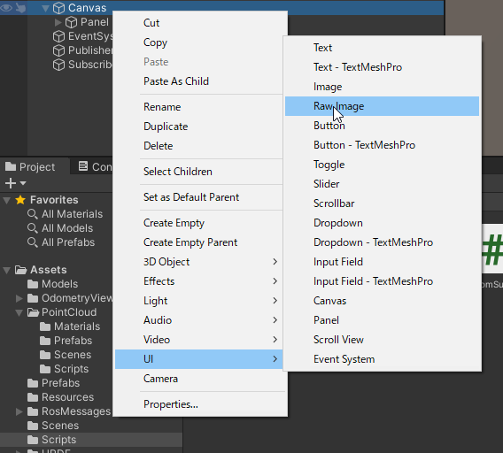
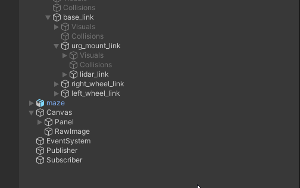
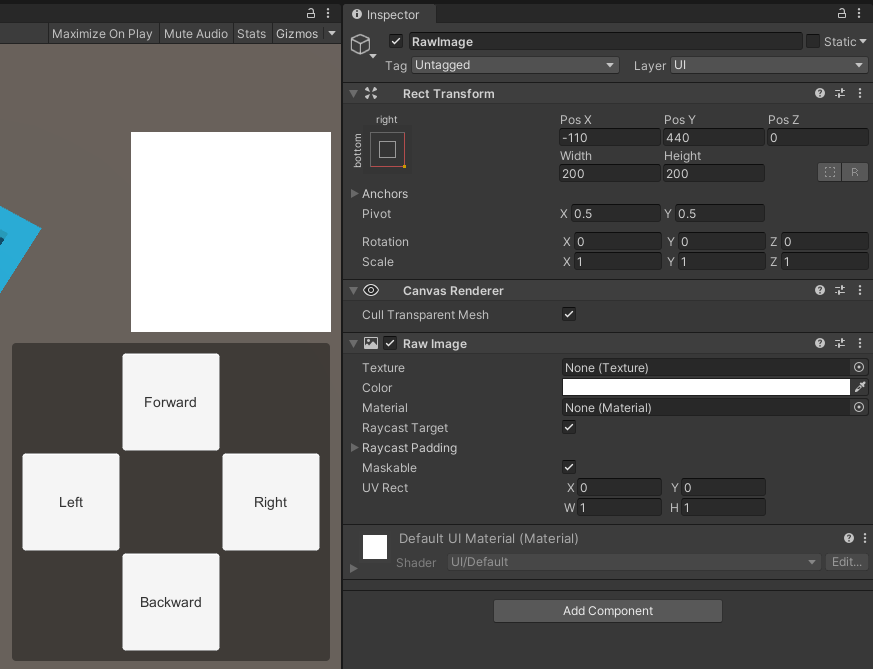
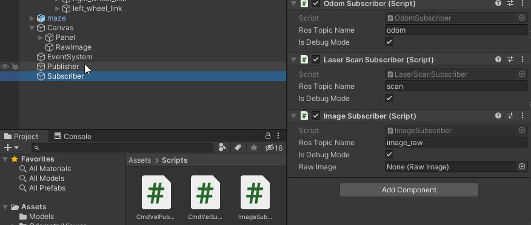
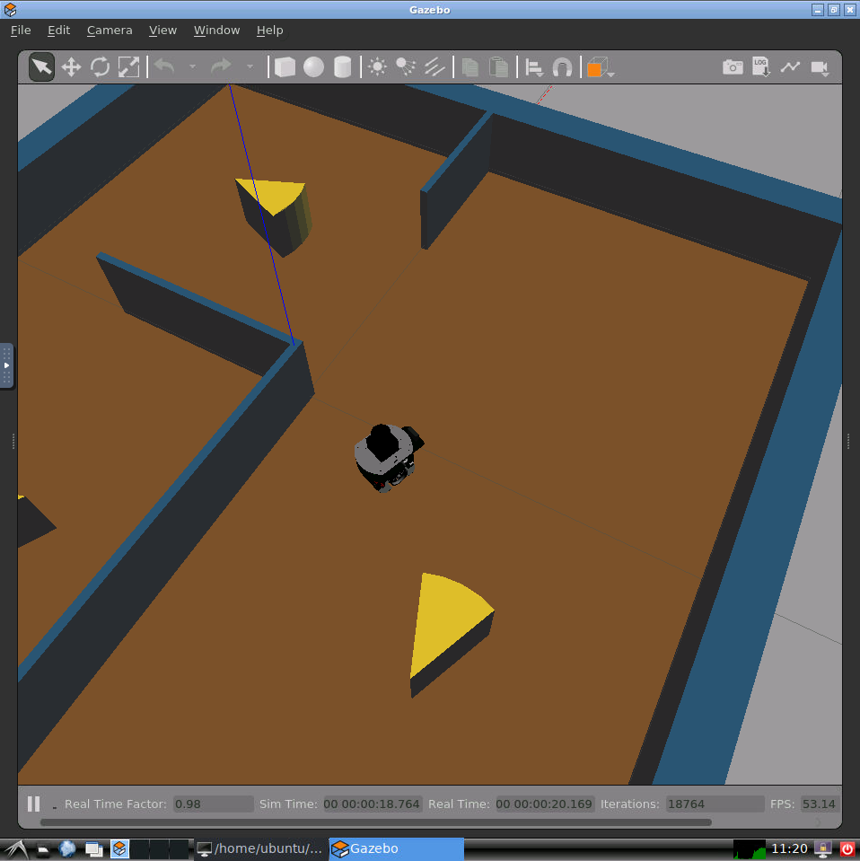
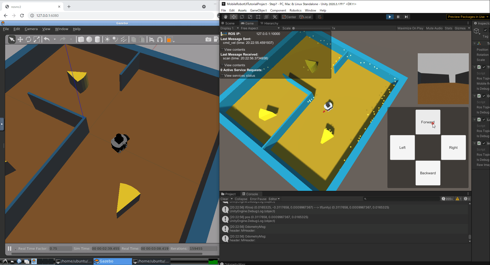

本ステップ実行後の状態のSceneファイルはMobileRobotUITutorialProject/Assets/Scenes/Step7.unityから入手できます。
STEP6までと同様にAssets/Scripts/ImageSubscriber.csをSubscriberオブジェクトにアタッチします。
ここまででSubscriberに追加したコンポーネントはTf Subscriber、Odom Subscriber、Laser Scan Subscriber、Image Subscriberの4つになります。

HierarchyウィンドウのCanvasオブジェクトの子オブジェクトとしてRawImage形式のGameObjectをRawImageという名前で作成します。


RawImageオブジェクトについてInspectorウィンドウから表示位置を変更します。
Rect TransformコンポーネントのAnchor Presetsは右下寄せになるright-bottomを選択します。
Pos X, Pos Y, Pos Z, Width, Heightはそれぞれ-110, 440, 0, 200, 200にします。

次に、Subscriberオブジェクトを選択してInspectorウィンドウを開き、Image SubscriberコンポーネントのRaw Imageに先程作成したRawImageオブジェクトをを指定します。

STEP3～STEP6と同様に、再生モードでUnityプロジェクトを実行します。
次にGazeboシミュレータを起動します。Dockerを起動し、LXTerminalを実行するところまではこれまでと同じですが、 シミュレータの起動時にオプションを指定します。
1枚目のLXTerminalで以下のコマンドを実行します。
roslaunch raspimouse_gazebo raspimouse_with_cheeze_maze.launch camera:=true
無事実行できると以下のようにシミュレータが起動します。STEP6までとは少し異なり、カメラがロボット前方にあることが確認できます。

2枚目のLXTerminalで以下のコマンドを実行します。
roslaunch ros_tcp_endpoint endpoint.launch
シミュレータを起動してros_tcp_endpointを起動したあとは再生モードのUnityの操作ボタンから移動指令を送信します。

オドメトリとLiDARデータに加えて、カメラデータを可視化することができました。
カメラデータ受信用スクリプトとカメラデータ描画用オブジェクトを追加し、カメラデータを可視化する方法を紹介しました。
「UnityとROSで学ぶ移動ロボット入門 UI作成編」のチュートリアルは以上です。 本教材の内容を応用したオリジナル作品の作成や、 各種ツールのより高度なテクニックを学ぶ際はINTRO1、 INTRO2にてご紹介したリンク先をぜひ参考にしてみてください。
これから先、Raspberry Pi Mouse以外のロボットを試してみたり、Unity Asset Storeなどで公開されているアセットを組み合わせてカスタマイズしてオリジナルUIにチャレンジしたり、 みなさんがROS対応移動ロボットとUnityを組み合わせてUIを制作する際の一助となれば幸いです。